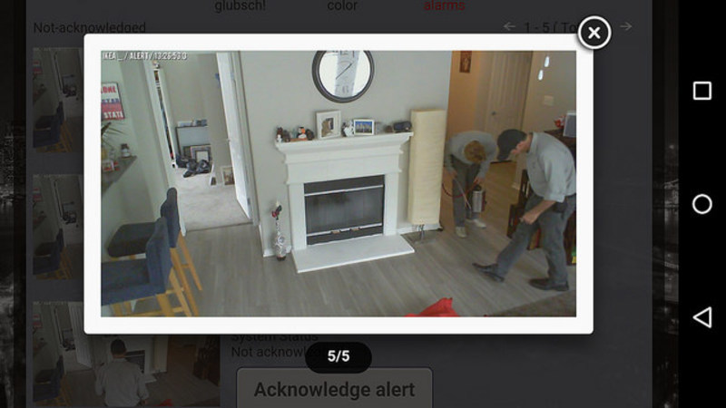
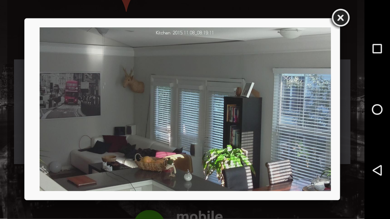
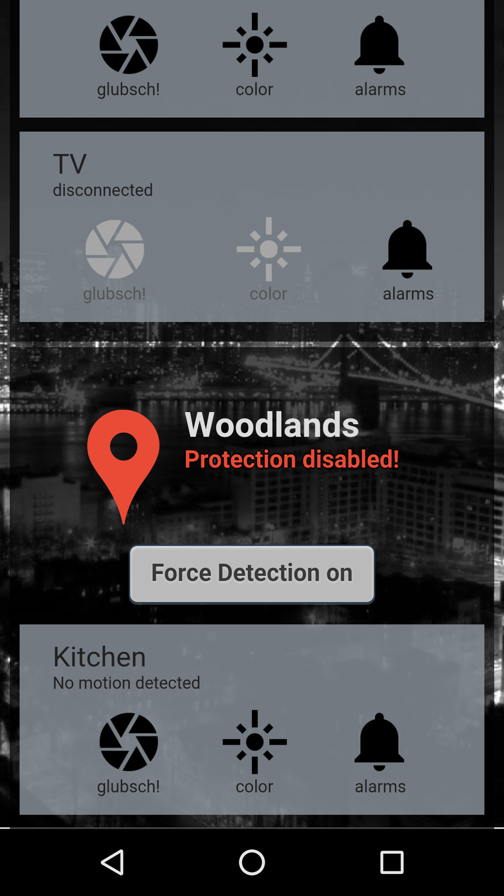
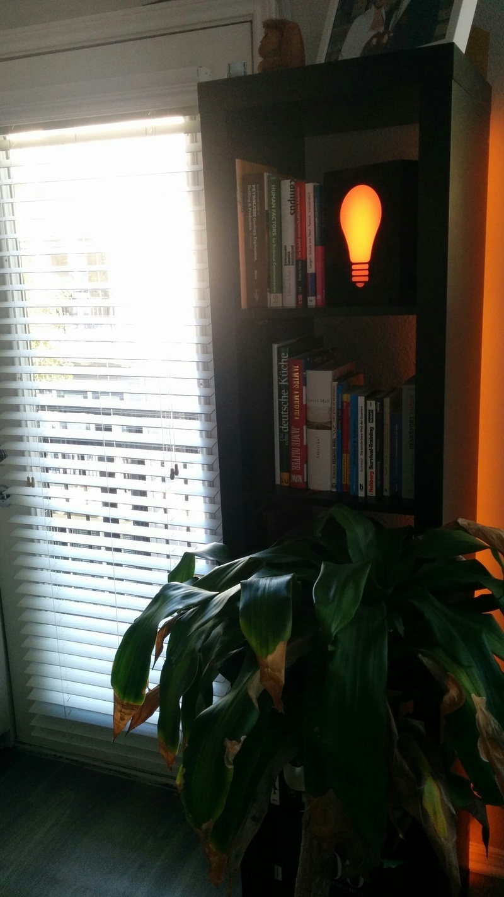
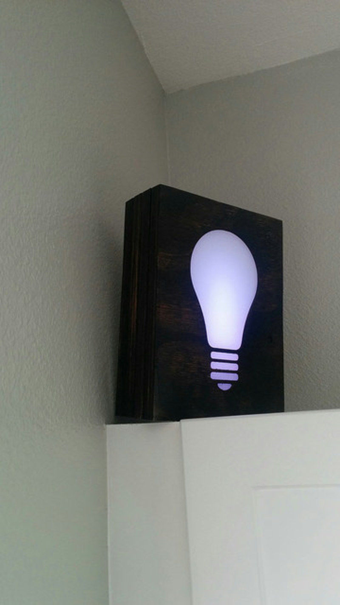
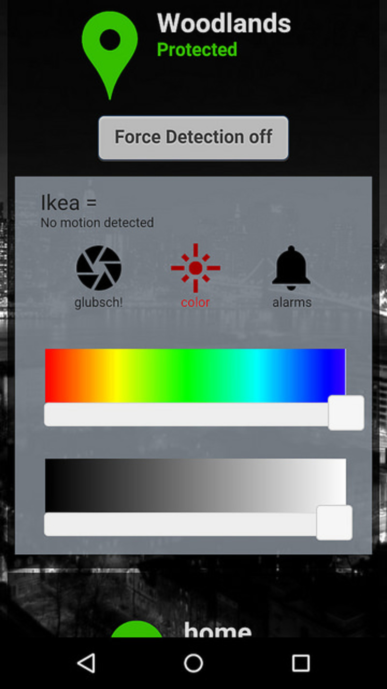

Welcome to GitHub Page of Glubsch!
This project is about my home surveillance system that I've build to familiarize myself more with python3 and the server client architecture in general.
Glubsch is an old german word and might be translated as "watching with big eyes" which is what is does ;)
The purpose of this system is to monitor my apartment constantly and report suspicious activities like below back to my phone while I'm not at home.
(It turned out that those guys are only the roach guys - I forgot that we've asked them to come).

Geofencing
My most important requirement was convenience. I don't like system that are dump and have to be enabled by hand. My system should be smart, automated, fast! Thus I've written an Android Service, that monitors the position of the phones of me and my wife. Moving a phone further then 300m away from an "area" will trigger a message from the service to the server, "I'm not longer @Home". The server will send a message to all cameras in that area soon as everyone has left it "Turn system sharp". Smart, easy, reliable!
Liveview
The second priority was to be able to see a liveview, with low delay, high resolution and a decent framerate.

I'm using the raspberry pi cam and have adopted the raspimjpeg source code to generate me two photos, one at 512x288 and one at 1280x720 each at 10fps.
It turned out that I cant upload all the high res footage because each picture has a size of roughly 70kB (=70kB*10fsp*8b/B=5.6Mbps) so currently I'm streaming high res pictures at 2fps
Components
This project is divided in three core components.
- First the server: holding the connections and sending messages between the clients. I've used a Amazon EC2 Micro server to run my from-scratch-written python server that you can find here. There is also a nice GUI running on the same server as cross-plattform webapp that you can find here.
- Second the cameras: Theses are raspberry pi's equipped with a camera running my python client. Those PIs are connected to a camera,
6 rgb LEDs and a motion sensor. My first attempted was to use the program called "motion" for image recognition but that fail because we see a
lot of reflection from our neighbors windows, e.g. when they open the windows we have fancy light moving through our apartment or at night,
cars driving by always triggered the alarm
So i decided to use very small motion sensor, they even work in complete darkness - neat! The Code for my clients is available here. - Last: My (our) android phones. Nothing fancy here, just a service running in the background and a cordova version of the webapp as shown on the picture on the right. The code for the cordova client is available right here.
Livingroom-acceptance-factor
 Now, I had all those cameras in my living room but I didn't really like the pure Raspberry PI and the camera looking at me.
To solve this problem I've integrated the client in a wooden Box, added 6 rgb LED's and milled a light-bulb-shape in the front.
I've stained the wood in dark-walnut color which makes it nearly impossible to see the camera or the black motion sensor.

So whenever the client is not active, but detects motion, just the light comes up. That's a really neat night light.
Especially since I can change the color on my smartphone. Depending on the mood those light are sometimes "cool-ice-white" or "warm-orange".
20 minutes after the last detected movement those lights will turn off to avoid constant light in our living-room.
Project copy / contribution
Everyone is welcome to copy this project and improve the content. Send me a mail if you have questions, or would like to help me.